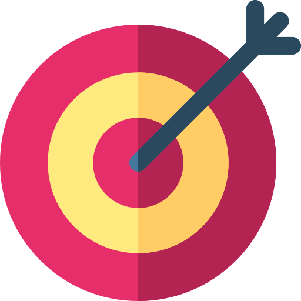

As you can probably recall from the tweets that these previous presidents had, one was always more
personal and often spoke in first person while the other was more formal and sometimes referred to himself in the
third person.
Though Donald Trump and Barak Obama had discussed many events and topics during their presidency,
we will be going through specifically how these individuals are utilising or not utilising pronouns in the context
of gun control and violence in the USA.
Presidential Stance
Gun and magazine bans are a total failure. ... Opponents of gun rights try to come up with scary sounding
phrases like “assault weapons," “military-style weapons” and “high capacity magazines” to confuse people.
What they’re really talking about are popular semi-automatic rifles and standard magazines that are owned by
tens of millions of Americans. Law-abiding people should be allowed to own the firearm of their choice.
The government has no business dictating what types of firearms good, honest people are allowed to own.
- Donald Trump (August 11, 2019)
We cannot and will not be passive in the face of such violence.
We should be willing to challenge old assumptions in order to lessen
the prospects of such violence in the future.
- Barak Obama
(January 12th, 2011)
Since 1999, there has been at least 2000 people killed or injured from mass shootings in the US.
In such dire times, the public would look to their leaders for guidance and solutions so that these tragic incidents never happen again.
Using words is a great way to reassure the people, but have these presidents actually considered what they put out to the world?
This graph contains tweets that these men posted on the topic of gun control and gun violence throughout their presidency.
Each tweet are positioned based on the sentiment value where below -1 are negative and above 1 are positive.
Can you find the difference between what these two use the most or the least?
Total Amount of Pronouns Used:
|
I |
Me |
My |
You |
We |
Us |
Our |
They |
Them |
Total |
| Trump |
|
|
|
|
|
|
|
|
|
|
| Obama |
|
|
|
|
|
|
|
|
|
|
From the data, it's clear that both presidents had used a lot of pronouns in their tweets as well as different types, some more than
the other. But why do they use it?
For this case where these tweets are mostly directed to the American citizens, an article from the
Landscape Business, states that leaders can if used correctly:
 |
 |
|
| Motivate - by using the word "you" to assign responsibilities and delegate authority. As it is a loaded pronoun, it should not be used to diminish the people they're talking about. |
Focus attention - by using the word "I" to bring correction, state criticism or speak about personal values. If this is misused then it can risk people feeling their contributions is attributed soley to the leader, and thus may not be willing to make any more effort. |
Build-up - by using the word "we" to discuss topics that affects the group, that is the "us". It should not be used to spread blame and should be sincere, as it is noticeable when they're not. |
Donald Trump as president is unique in the way he uses social media like Twitter to express his opinions. Unlike Obama, it seems that Trump composes almost all of his tweets himself
and that is clearly demonstrated when he uses the pronouns "I" or "me". However, his tendency of favouring the 'interpersonal' in his tweets emphasises to his supporters that he will be
the one enacting on the solutions to issues like gun control, while simultaneously putting his 'enemies' in a negative light.
According to an article by Misha Ketchell, it
explains how Trump is a storyteller, which helps build a high level of loyalty from his supporters; divert attention from negative topics and set the agenda for American public discussions.
There are 5 main themes:
- The true version of the United States is beset with invaders;
- Real Americans can see this;
- I (Trump) am uniquely qualified to stop this invasion;
- The establishment and its agents are hindering me;
- The U.S. is in mortal danger because of this.
Thus, Trump's narrative approach in his tweets follow these themes, many originating from when he
takes aspects of sources such as articles and videos and puts his
own version out there for his loyal followers to see,
which is why
many seemed ill-informed.
For most successful politicians, the way they garner support can be linked through how they convey themselves in their speeches
or in this case tweets. Barack Obama and many others rely on the use of collective language such as "we" and "us" to make their supporters feel involved and demonstrate
that it is for the interest of the people. According to a research study published in 2013
on the use of such language by leaders, they found that:
- The use of the word "we" relates to a significant index of these leaders in gaining a following.
- Leaders act as entrepreneurs of identity which defines what they mean by "we" and "us", and also builds a sense of 'one-ness' among current and potential followers.
- Thinking and acting as a collective rather than individual shows capability in mobilising follower support for their leadership.
Therefore, it's clear that the narrative approach Obama has presented himself is as a president who
views any issues that the U.S. may have like gun violence as a
collective problem.
Moreover, he seems to have an
appropriate balance of expressing empathy during tragic occurrences like mass shootings and
expressing his stance on
legislations and policy.
In the end, with such differing narrative styles, who would you be more inclined to
support?
In regard to gun control and violence, here are what the American people have to say:
Source: Survey of U.S. adults conducted March 13-27 and April 4-18, 2017